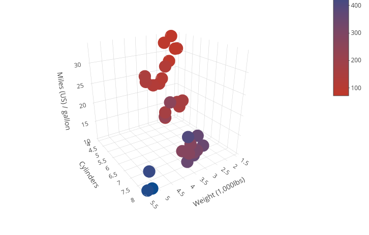

This Shiny application is a tool for exploratory data analysis on a dataset. It's goal is to provide an immediate insight into the structure of a dataset, using a correlation matrix and a 3d plot to have a visual cue into the relationship the variables of the dataset have one with an other
Exploratory data analysis tool
David Tonarini
Overview
Instructions
To use the app, you must choose a dataset, and then pick on the variables within that dataset to use through the analysis.

Currently available datasets are: mtcars, pressure, rock
Correlation
The correlation matrix analyses the correlation of the chosen independent variable with all the other variables within the dataset. In the example below we show the ouput after choosing the variable mpg (car consumption in Miles / gallon) from the dataset mtcars
## wt cyl disp hp drat vs am
## -0.8676594 -0.8521620 -0.8475514 -0.7761684 0.6811719 0.6640389 0.5998324
## carb gear qsec
## -0.5509251 0.4802848 0.4186840
Plot
The app also automatically displays a 3d plot, plotting the chosen independent variable against the three most correlated parameters (on the x-axis, y-axis and through a color scheme), to provide immediate visual insight into the data structure. Here is an example of the output with the dataset mtcars.
